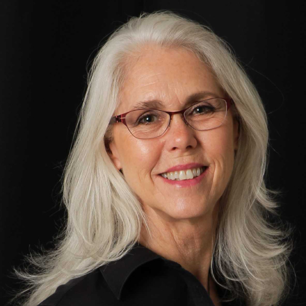

Past Executive Committee 2019-2021
Executive Board Members Represented From Across California
Rudy M. Ortiz
Interim President and
Co-founder
- UC Merced
Co-founder
- UC Merced
Martha E. O'Donnell
Interim Vice-President and
Co-founder
- UC Davis
Co-founder
- UC Davis
Kim E. Barrett
Interim Secretary, Co-Founder, and
Past President APS
- UC San Diego
Past President APS
- UC San Diego

Alicia A. McDonough
Interim Treasurer and
Co-founder
- University of Southern California
Co-founder
- University of Southern California